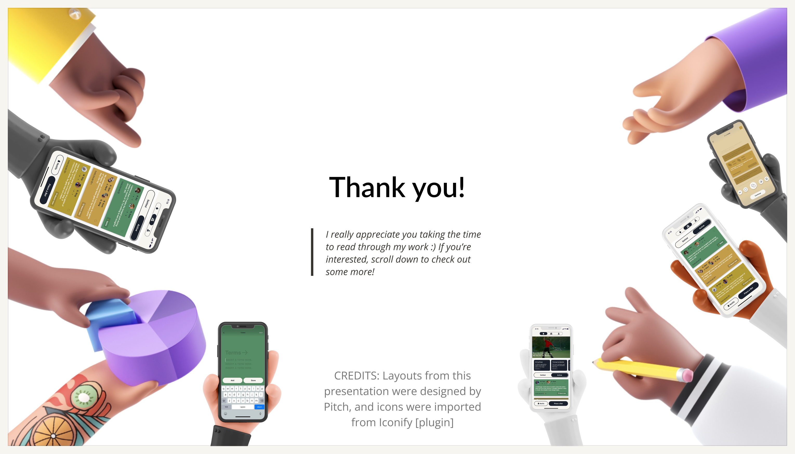
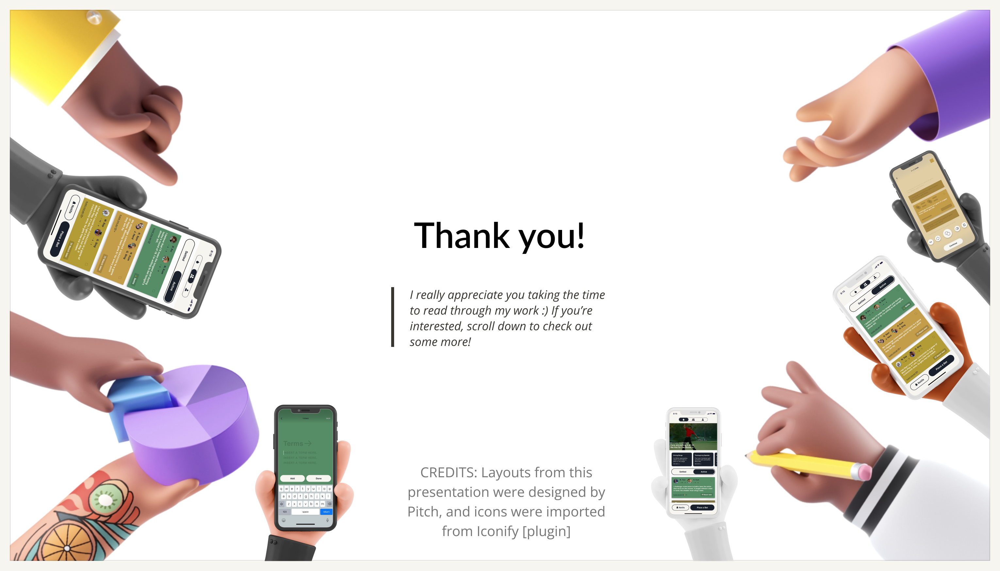

White Flag
Who will raise the white flag?.
Team Project & Solo Rebrand | 2020 & 2023 | 4 months
What is White Flag?
White Flag is a social golf betting platform. On the app, you can find fun bets to make through betting templates and trending bets, so that you and your golf group can find more adrenaline on the course. To make sure losers are held accountable, bets are shared on a public feed for your friends to cheer on.
Project Overview
This entrepreneurial venture began in the iXperience Product Management Program, where I remotely teamed up with Adam Hurwitz and 5 others after he pitched his idea to the class. Together, we spent 2 months conducting user research to investigate our assumptions about the idea. We meant to reconvene and translate the prototype into an app during Winter Break in 2020; however, as we work on recruiting developers for the app, the plan fell through as our individual college plans got in the way.
Fast forwarding to 2022, a number of platforms like Handshake Bets, Betr, and VersusGame have emerged in high spirits; for this reason, I like to think of UBetcha as the million dollar idea that slipped out of our hands; however, in 2023, I had the idea to convert the platform into social bets for strictly golfing. After this rebrand, I'm confident that this platform could gain a fun, active user base of golfers and bettors.
Role
Design Leadership
Visualizing Solutions
Synthesizing Info.
Prioritization
Tools
Figma
Balsamiq
Umso (Landen 2.0)
Miro
UX Methods
Surveys
User Interviews
Personas
Usability Tests
MVP Tests
Competitive Research

Problem
Challenge
Making bets with a friend is one of the classic, adrenaline-rushing forms of competition that never gets old. Whether it be at a golf course, over text, or at a party, people love putting something at stake to make life more exciting. Unfortunately, the payment or “what’s at stake” never gets fulfilled. People ghost each other, or don’t follow through because they “forgot”.
From the shake of two hands to a pinky promise, we offer a social platform for bets to be preserved and observed, so that when the time comes, competition is brought to the forefront, and a bet pulls off its thrill. Join us, in making bets on any terms flourish with accountability and social recognition. In an industry where people can bet on anything, White Flag focuses on on strictly golf bets, with the hopes of collecting high-quality bets and establishing a high-quality platform.
Problem Statement
üîç
Young adult golfers want a platform to find inspiration for social bets so that they can add more fun to their golfing rounds. Furthermore, they want to hold their friends accountable, so that they can preserve the thrill around these bets.
The Case
 

 Slide 1 of 32
Slide 1 of 32
Key Takeaways
Start Lean
The lean startup approach enabled our team to tread quickly, because it forced us to challenge the backbone of our product idea before getting distracted by little details. For me, this felt uncomfortable at first, because I like to make things look nice, whether that be survey questions or UI mockups; nevertheless, it paid off, as it helped our team avoid feature creep and happily iterate forward for 4 months.
It's more than okay to pivot
Earlier, I thought pivots were similar to falling off a cliff and completely restarting. Now, I can understand and visualize what they truly represent. During ideation, several different solutions are produced for a certain problem; thus, on this white board, or matrix, etc, a pivot is essentially shifting from 1 sticky note to another. I envision this because it feels more methodical than a square 1, per say. Altogether, the analogy keeps me at peace, reminding me that pivoting is what’s most important to solving a problem in the end.
What would I do differently?
If I could do this again, I would encourage my team members to share their individual strengths from the get-go. Personally, I wish I shared my design experience earlier, because it would have enabled me to take more leadership and initiative in group design decisions; instead, by staying quiet, it took us longer to reach the same conclusions. As a team, we all could have benefited from this, as it would have organized each of us into a fitting role. Instead, we spent the bulk of meetings after iX working on just design, which led to our burnout.
Thank You!
Want s'more? Check out more projects below!